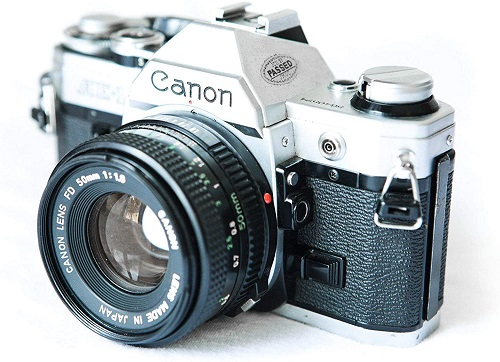

Camaras Analogicas
Las cámaras digitales

Tipos de Camaras |
1.Te hace sentir más feliz
La fotografía es arte y, de hecho, eres un artesano de la realidad. Tomar fotografías es la dosis correcta de felicidad que proviene de crear algo único que hiciste: esto es realmente especial y debes hacerlo todo el tiempo.
2. Capturas historia
Con la fotografía, tienes la oportunidad de capturar eventos cruciales en proceso. Desde la política hasta los deportes y la música, así como la vida cotidiana, preservas la realidad tal como es en un marco de tiempo específico,
3. Experimentas
Descubre el amplio mundo de los estilos fotográficos, prueba diferentes tipos de cámaras. La fotografía es más que solo tu teléfono. De hecho, déjalo, enciéndelo sin que una pantalla negra lo filtre por ti.
4. Cuentas tu historia
Nada es más importante que lo que ves. Quizás otros se relacionen contigo o quizás no, de cualquier manera tendrás la oportunidad de mostrar la realidad con tus propios ojos y hacer que las personas te conozcan a través de tus imágenes. Siempre hay una historia que contar, este es el momento de narrar la tuya.
5. Conectas con el mundo
Puede que no domines ningún otro idioma que no sea tu lengua materna, pero sabes que es verdad: una imagen vale más que mil palabras. La fotografía realmente puede acercarte a personas de todo el mundo, ya que las imágenes son un lenguaje universal que cualquiera puede entender y conmoverse. Lo que quieres comunicar con tus retratos o tus fotografías no necesita una leyenda.
6. Encuentras tu mensaje
Lo que te hace feliz al disparar es la primera pista de lo que intentas decir con la fotografía. Encontrar tu mensaje es esencialmente descubrir tu estilo. Quizás, te encanta tomar fotografías de la vida silvestre y tu mensaje sería crear conciencia sobre su preservación y protección. Una vez que sepas cuál es tu mensaje, será muy fácil motivarte para planificar y hacer más tomas.
7. Aprendes historia
Puedes honrar el pasado revisando las tomas más icónicas que marcaron un evento específico en los últimos dos siglos, o incluso simplemente buscando en los archivos de tu ciudad para averiguar cuánto material fotográfico se produjo e inspirarte para hacer lo mismo y continuar el ciclo.